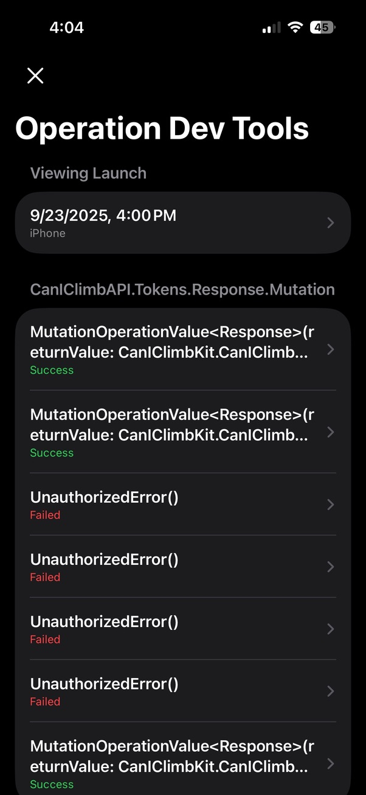

Swift Operation
-- Minutes to Read
Data fetching is flakey, yet most software we use needs to do it. In general, flakiness complicates software, because something can only be flakey if it comes from the physical-world. That is to say, fetching data is hard.
However, when I say it’s hard, I don’t mean the code to actually fetch
data itself. Generally, that part is pretty easy, and you can spin up
an HTTP request to any server with just a few lines of Swift code.
Codable and JSONDecoder handle most cases of
decoding data from a server, and they do so pretty well. Additionally,
many Apple Frameworks that also involve data fetching also tend to be
relatively simple function calls if we’re just talking about fetching
the data itself.
Yet we know as developers that number of things that can go wrong when
dealing with a function that has both async and
throws in its signature. Loading states, error alerts,
retries, caching, cancellation, deduplication, exponential backoff,
delays, network connection status, keeping data consistent between
screens and much more that is annoying to deal with.
I’ve lost count of how many times I’ve written the same kind of code that: Sets a state variable to indicate loading, fetches data, if failed sets an error state variable, otherwise sets the data state variable to indicate that loading is done. The cherry on top is when you also have to display an alert when the data fetching fails. All of this is also not considering caching, yielding intermediate values whilst fetching from the source of truth (ie. Your backend), and much more.
Over these past few months, I’ve spent a lot of effort developing a toolkit that I’ve used across various projects to make dealing with asynchronous operations and data fetching much more manageable, so you can move on after writing the simple data fetching code. Today, I’m finally putting a formal release tag behind these tools, so that you can use them in your (smaller) apps. For the record, that also includes apps on Linux, WASM, Windows, and Android.
The resulting library is named
swift-operation.
This article will mainly be about its development, and the various techniques I’ve employed when using and designing the library. I won’t focus too much on how to use the library in this article. The GitHub repo, documentation, and many demo apps present in the repo should do a sufficient job in providing many examples of how to use the library.
Origins
This project started out from my experience working with react-native
in a startup for the past 1.5 years where we heavily relied on
Tanstack Query. When writing Swift apps in my spare time, I missed the ability to
have something that managed async state intuitively, which spawned the
desire for this project. My initial goal was just to port Tanstack
Query over to Swift, and integrate it with
swift-sharing, an already popular state management library used in many apps
(including every app that uses modern TCA). In fact, the original name
of the library was Swift Query, but of course that name was stolen…
I was able to get this simple port version of the library up and running in quite a short period of time, but naturally I of course felt the need to continuously refine things as I kept trying it in different scenarios. This led to months of iteration as the library needed to find a distinct identity from Tanstack Query given that Swift is a very different language compared to TypeScript.
Tanstack Query advertises itself as an “Asynchronous State Manager”.
Swift Operation also has such state management built in, and even has
an integration with Sharing through the
@SharedOperation property wrapper. However, the resulting
library I’ve built serves a more general purpose. Swift Operation aims
to make asynchronous work as whole easier to manage, of which
“asynchronous state management” would be a subset of that
functionality. I like to call Swift Operation, an asynchronous
operation manager because it uses a SwiftUI modifier approach to
constructing operations.
struct User: Sendable {
let id: Int
let name: String
}
extension User {
static func query(for id: Int) -> some QueryRequest<User?, any Error> {
// We've configured fetching our user with retries, deduplication,
// stale-when-revalidate, and automatic refetching when the network
// connection flips from offline to online with just a few lines of
// code.
Query(id: id)
.retry(limit: 3)
.deduplicated()
.stale(after: 60 * 5)
.rerunOnChange(of: .connected(to: NWPathMonitorObserver.startingShared()))
}
struct Query: QueryRequest, Hashable {
let id: Int
func fetch(
isolation: isolated (any Actor)?
in context: OperationContext,
with continuation: OperationContinuation<User?, any Error>
) async throws -> User? {
// Fetch the user...
}
}
}
For TypeScript apps, Tanstack Query is generally only used inside your
UI layer, and its API heavily skews itself towards that particular use
case. Swift Operation provides tools to use the library both within
your UI and data layers. For example, there are many instances where
the library is used for
tool calling
via conforming to the Tool protocol conformances from
Apple’s new FoundationModels framework.
I suppose if you want to correlate Swift Operation with libraries from the TypeScript world, it’s largely a combination of both Tanstack Query and Effect. Though so far, the library is more optimized for the Tanstack Query case.
Design Philosophy & Learning Curve
Swift Operation is a complicated library, and intentionally so. I would wager that it is more complicated than Tanstack Query if you were to try and understand every detail of it.
That being said, it is also quite simple in the sense that it’s built entirely around the notion of calling an async function. I suppose the complexity is really just case of “different” rather than “seriously complicated” (I think of TCA’s complexity in the same way for the record). Once you get over the learning curve, I think the end result will be a net win in simplicity considering what the library does for you.
This large learning curve derives from 3 things:
- The library is incredibly flexible whilst also providing as much type-safety as possible.
-
It surfaces advanced concepts of Swift Concurrency (eg.
isolatedparameters) right in your face. - Data fetching is hard and complex with many edge cases that the library wants you to be aware of.
Though the good news is that the most common use case (ie. Just making
and using a QueryRequest that fetches some data in your
UI.) is not that hard, and can be done incredibly “swiftly”. This most
common use case should get you through ~80% of scenarios, and the rest
of the library can be progressively learned.
You’ll likely end up with more lines of code in your app after adopting the library. Ignoring the fact that many of those added lines won’t contain much substance (ie. Struct/Function declarations), the library also wants to surface edge cases that you probably weren’t thinking about before, so it’s only natural that you will end up writing code to handle those additional cases. Of course, over time the ideal for the library should be to get rid of many of those added lines that have little substance.
Comparison to Tanstack Query
One of the things Tanstack Query could’ve improved on was what the notion of a “query” was. In fact, I named the library Swift Operation because queries are a subset of a general operation that runs some workflow and returns a result. Mutations and paginated requests (ie. The equivalent of Infinite Queries from Tanstack Query), are also subsets of operations. In Tanstack Query, mutations and queries are separate concepts, but in Swift Operation they share much of the same core since they both derive from base operations.
Customizing Operations
Take a common usage of useQuery from Tanstack Query.
const FIVE_MINUTES = 5000 * 60
const usePost = (postId: number) => {
return useQuery({
queryKey: ["post", postId],
queryFn: async () => await fetchPost(postId),
retry: 3,
staleTime: FIVE_MINUTES
})
}
The problem is that we customize everything through a bag of configuration properties! This bag of properties is solely maintained by Tanstack Query, and adding a new property to this bag requires the approval of the maintainers. In essence, this makes adding custom higher order behavior to your queries nigh-impossible.
Compare this to how queries are customized in Swift Operation.
struct PostQuery: QueryRequest {
let postId: Int
// ...
}
let fiveMinutes = TimeInterval(60 * 5)
let query = PostQuery(postId: 10)
.retry(limit: 3)
.stale(after: fiveMinutes)
The customization very much feels like customizing a SwiftUI view with
a bunch of view modifiers. In fact, you can create your own modifiers
with the OperationModifier protocol. Let’s look at how
you can create a modifier to add artificial delay to any operation,
whether or not that’s a mutation, query, or paginated request.
import Dependencies
import Operation
extension OperationRequest {
public func previewDelay(
shouldDisable: Bool = false,
_ delay: Duration? = nil
) -> ModifiedOperation<Self, _PreviewDelayModifier<Self>> {
self.modifier(_PreviewDelayModifier(shouldDisable: shouldDisable, delay: delay))
}
}
public struct _PreviewDelayModifier<Operation: OperationRequest>: OperationModifier, Sendable {
let shouldDisable: Bool
let delay: Duration?
public func setup(context: inout OperationContext, using query: Operation) {
context[DisablePreviewDelayKey.self] = self.shouldDisable
query.setup(context: &context)
}
public func run(
isolation: isolated (any Actor)?,
in context: OperationContext,
using query: Operation,
with continuation: OperationContinuation<Operation.Value, Operation.Failure>
) async throws(Operation.Failure) -> Operation.Value {
@Dependency(\.context) var mode
guard mode == .preview && !context[DisablePreviewDelayKey.self] else {
return try await query.run(isolation: isolation, in: context, with: continuation)
}
if let delay {
try? await Task.sleep(for: delay)
} else {
try? await Task.sleep(for: .seconds(Double.random(in: 0.1...3)))
}
return try await query.run(isolation: isolation, in: context, with: continuation)
}
}
private enum DisablePreviewDelayKey: OperationContext.Key {
static let defaultValue = false
}
This modifier is used in the demo app that ships with the library to add fake random delay to every single operation. This allows me to preview the experience that an actual user with a flakey internet connection would have, whilst still mocking fake results for the UI.
Another modifier is used to also power dev tools that analyze the run time of every single operation in the app.

To handle automatically displaying alerts when an operation succeeds
or fails, I also created another
modifier
that utilizes AlertState from
swift-navigation. This modifier was often used in conjunction with mutations.
Custom modifiers allow for higher-order functionality that you can’t get in Tanstack Query, and I’ve found this kind of configuration flexibility to even be useful in practical scenarios as can be seen by the above modifiers.
Operation Types
Tanstack Query gives you queries, mutations, and infinite queries. All of these operation types are baked into the library, and new ones cannot be added directly.
Swift Operation also gives you those 3 operation types, though
infinite queries are called paginated queries, but you can create more
kinds if you want. Queries, mutations, and paginated queries all
inherit from the StatefulOperationRequest protocol, and
StatefulOperationRequest inherits from the
OperationRequest protocol. This generality means that you
can write a custom operation modifier, and it will automatically work
for queries, mutations, paginated queries, and any other custom
operation types you come up with all at the same time.
There’s an article in the documentation that describes the basics of
creating a custom operation type from scratch. I will note that
creating an operation type with the same robustness as the built-in
types would take a lot of effort, but generally I think the need to
create a fully robust operation type is quite a rarity. I’ve only
found myself creating a custom operation type on 1 occasion so far,
which was to create a type that could paginate many different data
streams at once for a very specific use-case. In that case, it was
enough to create a custom OperationState concrete type,
so I think the bigger idea is that you can modularly replace parts of
the built-ins as needed.
Additionally, it’s also possible to create operation types that don’t
require any state management because OperationRequest has
no stateful requirements.
Multiple Data Updates
Another benefit of Swift Operation is that it’s possible to yield
multiple data updates from an operation while it’s still running
through the OperationContinuation type that’s handed to
each operation run. Tanstack Query also has some support for this
through
streamedQuery
which works via
async iterators
(think JavaScript’s version of AsyncSequence), but the
issue with that API is that any query that uses it will not retain its
loading state after the first chunk of data arrives.
Regardless, in today’s LLM-based application landscape, streaming data
is far more relevant than it once was. Therefore, I wanted to make
this a first-class citizen in Swift Operation. The
demo app
shows how you can use Apple’s new FoundationModels in conjunction with
OperationContinuation to stream data while it arrives
from the underlying on-device model.
Another use case for multiple data updates would be yielding data that’s locally stored on disk whilst fetching the freshest data from a remote server. In fact, this can be a great way to implement offline support as shown many different times in the demo app.
struct MyQuery: QueryRequest {
// ...
func fetch(
isolation: isolated (any Actor)?,
in context: OperationContext,
with continuation: OperationContinuation<Value, any Error>
) async throws -> Value {
async let value = serverValue()
continuation.yield(try await locallyPersistedValue())
return try await value
}
}
Tanstack Query also supports the above use case, but I think the main difference between the 2 libraries is that Swift Operation surfaces this functionality in a more direct way.
Detached State Management
In Tanstack Query all queries and mutations are managed directly by
QueryClient, and as a result an instance of the client is
needed everywhere to observe the state of a query or mutation.
This is also the default in Swift Operation (except
QueryClient is named OperationClient), with
the key difference being that the OperationStore type is
solely responsible for the state management of an individual
operation. The OperationClient merely just holds all the
store instances created by your app, and allows you to query specific
store instances using an OperationPath (the equivalent of
the query key in Tanstack Query). However, it’s also possible to
create stores that are not stored inside an
OperationClient, and these are called
“detached stores”.
Detached stores are particularly useful for 3 cases.
- You want multiple and completely separate store instances for the same operation.
-
You don’t want the store to be deallocated as a result of being
evicted from the store cache within an
OperationClient.- By default, this happens when your application runs low on memory, but it’s also possible to create your own custom store cache that uses a different eviction scheme (LRU, garbage collection, etc.).
-
You don’t like how
OperationClientmanages its pool of stores, and you want to create your own pool for some reason.- This last point is a testament to one of the design principles of the library. If you don’t like a built-in API, then you should have the power to create and use your own implementation of that API with the library.
Run Specifications
Tanstack Query has built-in support for refetching queries when the application re-enters the foreground from the background (Tanstack calls this refetching on focus), and refetching queries when the network status flips from offline to online. This is particularly useful for keeping data as fresh as possible in your UI in the context of the user switching between apps, or when implementing a “Reconnecting…” dialog.
Swift Operation also supports automatically rerunning operations in
these circumstances, but yet again it does so in a modular way. While
Tanstack Query bakes this kind of refetching directly into a query,
Swift Operation builds this functionality generically on-top of the
OperationRunSpecification protocol.
A run specification allows you to control when an operation automatically reruns. It has 2 requirements.
public protocol OperationRunSpecification {
/// Returns whether or not this condition is satisfied in the specified context.
func isSatisfied(in context: OperationContext) -> Bool
/// Subcribes to changes on this specification in the specified context.
func subscribe(
in context: OperationContext,
onChange: @escaping @Sendable () -> Void
) -> OperationSubscription
}
isSatisfied is general invoked immediately after
onChange is called within subscribe.
The
rerunOnChange modifier
provides the same operation rerunning capabilities as Tanstack Query’s
automatic refetching. The modifier takes a run specification, and will
automatically rerun the operation it modifies whenever it detects that
the return value of isSatisfied changes to true. In fact,
the actual refetching is further built on top of the generic
OperationController protocol.
NetworkConnectionRunSpecification and
ApplicationIsActiveRunSpecification are the run
specifications that power the same refetching abilities that you would
find in Tanstack Query. The difference between the 2 libraries in this
regard, is that you can also create
custom run specifications
to drive automatic rerunning.
Stateless Operations
Tanstack Query solely advertises itself as an asynchronous state manager, yet many of its features, like retries, also work in a stateless operation paradigm.
What do I mean by stateless operation? A stateless operation is an
operation that doesn’t need to have its state tracked by a UI or
something else in real-time. Just think of it as a typical
async function where you also don’t need to track whether
or not the operation is in a loading, error, or success state.
Since Tanstack Query is so focused on state management with its API, it only really makes sense to use it in your UI layer. If you have async operations that run in background or non-UI contexts, you generally don’t use Tanstack Query even if you would benefit from some of its features (eg. Deduplication and retries).
I wanted to make Swift Operation something that is also viable in your
data layer, and other non-UI contexts such as within tools in the
FoundationModels framework. This is why there’s both an
OperationRequest and
StatefulOperationRequest protocol, where
StatefulOperationRequest inherits from
OperationRequest.
If you create a direct conformances to OperationRequest,
you aren’t required to specify a State associated type,
or an OperationPath that uniquely identifies your
operation. In effect, conforming to
OperationRequest directly signals to the library that
your operation is stateless, or that it’s just an async function that
performs some work and returns a result.
Of course, you cannot create OperationStore instances
with stateless operations, so you will need
StatefulOperationRequest to be compatible with the store.
However, you still get access to a wealth of modifiers with stateless
operations, including the ability to create modifiers that change or
enhance the output type of your operation. Stateful operations cannot
use modifiers that change their output type because their
State type only works with a certain output type.
Future Directions
I think I’ve packed a lot into the 0.1.0 release of the
library, but I have many more ideas. This list is merely a brain dump
of whatever I can think of at the moment.
-
Embedded Swift Support
-
The library already supports all major Swift platforms
(including Android, Windows, and WASM), but the main thing
holding back Embedded support IMO would be the use of
existentials in deep corners of the library (eg. Within
OperationContext).
-
The library already supports all major Swift platforms
(including Android, Windows, and WASM), but the main thing
holding back Embedded support IMO would be the use of
existentials in deep corners of the library (eg. Within
-
Dev Tools
- The demo app shows how basic dev tools can be made that allow you to analyze every single operation run that your app performs. However, it would be better to have a library specific solution to this that’s cross platform, but this will probably take a lot of time and planning.
-
Better Defaults on Non-Apple Platforms
-
For instance, the default store cache on non-Apple platforms
does not use any mechanism to evict store entries because
DistpatchSource.makeMemoryPressureSourceisn’t available on those platforms. -
Additionally, Linux, Windows, and Android do not have a default
NetworkObserverandApplicationActivityObserver. WASM (in web browser applications) has dedicated default implementations for those 2 protocols if you enable theSwiftOperationWebBrowsertrait.
-
For instance, the default store cache on non-Apple platforms
does not use any mechanism to evict store entries because
-
Macros
-
At the moment, the library ships with no macros. However, it’s
also quite verbose with respect to defining operations. If there
could be a way to make creating operations just as simple as
defining normal functions (eg. The
@DatabaseFunctionmacro from Structured Queries), that would be nice. I just haven’t figured out how this would fully work with operation types with multiple requirements such asPaginatedRequest.
-
At the moment, the library ships with no macros. However, it’s
also quite verbose with respect to defining operations. If there
could be a way to make creating operations just as simple as
defining normal functions (eg. The
-
A Better Way to Derive Dependent Operations
- By this, I mean constructing operations that depend on the results of other operations. There is a documentation article that describes how to do this, but the solution is far from ideal, and I’m not at all satisfied with it.
Try it Today
I think the library is ready to be used on a larger scale now, and I don’t think I can keep improving it by iterating in isolation for much longer. That being said, it’s far from mature, so I would advise against using it in enterprise scale or mission-critical apps at the time of writing this.
The repo has a lot more material describing how to use the library in different contexts, so check it out!
— 9/26/25